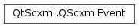

QScxmlEvent¶
Synopsis¶
Functions¶
- def
clear() - def
data() - def
delay() - def
errorMessage() - def
eventType() - def
invokeId() - def
isErrorEvent() - def
name() - def
origin() - def
originType() - def
scxmlType() - def
sendId() - def
setData(data) - def
setDelay(delayInMiliSecs) - def
setErrorMessage(message) - def
setEventType(type) - def
setInvokeId(invokeId) - def
setName(name) - def
setOrigin(origin) - def
setOriginType(originType) - def
setSendId(sendId)
Detailed Description¶
The
PySide2.QtScxml.QScxmlEventclass is an event for a Qt SCXML state machine.SCXML events drive transitions. Most events are generated by using the
<raise>and<send>elements in the application. The state machine automatically generates some mandatory events, such as errors.For more information, see SCXML Specification - 5.10.1 The Internal Structure of Events . For more information about how the Qt SCXML API differs from the specification, see SCXML Compliance .
See also
-
class
PySide2.QtScxml.QScxmlEvent¶ -
class
PySide2.QtScxml.QScxmlEvent(other) Parameters: other – PySide2.QtScxml.QScxmlEventCreates a new external SCXML event.
Constructs a copy of
other.
-
PySide2.QtScxml.QScxmlEvent.EventType¶ This enum type specifies the type of an SCXML event:
Constant Description QScxmlEvent.PlatformEvent An event generated internally by the state machine. For example, errors. QScxmlEvent.InternalEvent An event generated by a <raise>element.QScxmlEvent.ExternalEvent An event generated by a <send>element.
-
PySide2.QtScxml.QScxmlEvent.clear()¶ Clears the contents of the event.
-
PySide2.QtScxml.QScxmlEvent.delay()¶ Return type: PySide2.QtCore.intReturns the delay in milliseconds after which this event is to be delivered after processing the
<send>element.
-
PySide2.QtScxml.QScxmlEvent.errorMessage()¶ Return type: unicode If this is an error event, returns the error message. Otherwise, returns an empty
PySide2.QtCore.QString.
-
PySide2.QtScxml.QScxmlEvent.eventType()¶ Return type: PySide2.QtScxml.QScxmlEvent.EventTypeReturns the type of this event.
See also
PySide2.QtScxml.QScxmlEvent.setEventType()QScxmlEvent.EventType
-
PySide2.QtScxml.QScxmlEvent.invokeId()¶ Return type: unicode If this event is generated by an invoked state machine, returns the ID of the
<invoke>element. Otherwise, returns an empty value.
-
PySide2.QtScxml.QScxmlEvent.isErrorEvent()¶ Return type: PySide2.QtCore.boolReturns
truewhen this is an error event,falseotherwise.
-
PySide2.QtScxml.QScxmlEvent.name()¶ Return type: unicode Returns the name of the event.
-
PySide2.QtScxml.QScxmlEvent.origin()¶ Return type: unicode Returns a URI that points to the origin of an SCXML event.
-
PySide2.QtScxml.QScxmlEvent.originType()¶ Return type: unicode Returns the origin type of an SCXML event.
-
PySide2.QtScxml.QScxmlEvent.scxmlType()¶ Return type: unicode Returns the event type.
-
PySide2.QtScxml.QScxmlEvent.sendId()¶ Return type: unicode Returns the ID of the event.
-
PySide2.QtScxml.QScxmlEvent.setData(data)¶ Parameters: data – object Sets the payload data to
data.See also
-
PySide2.QtScxml.QScxmlEvent.setDelay(delayInMiliSecs)¶ Parameters: delayInMiliSecs – PySide2.QtCore.intSets the delay in milliseconds as the value of
delayInMiliSecs.See also
-
PySide2.QtScxml.QScxmlEvent.setErrorMessage(message)¶ Parameters: message – unicode If this is an error event, the
messageis set as the error message.
-
PySide2.QtScxml.QScxmlEvent.setEventType(type)¶ Parameters: type – PySide2.QtScxml.QScxmlEvent.EventTypeSets the event type to
type.See also
QScxmlEvent.eventTypeQScxmlEvent.EventType
-
PySide2.QtScxml.QScxmlEvent.setInvokeId(invokeId)¶ Parameters: invokeId – unicode Sets the ID of an invoked state machine to
invokeid.See also
-
PySide2.QtScxml.QScxmlEvent.setName(name)¶ Parameters: name – unicode Sets the name of the event to
name.See also
-
PySide2.QtScxml.QScxmlEvent.setOrigin(origin)¶ Parameters: origin – unicode Sets the origin of an SCXML event to
origin.See also
-
PySide2.QtScxml.QScxmlEvent.setOriginType(originType)¶ Parameters: originType – unicode Sets the origin type of an SCXML event to
origintype.See also
-
PySide2.QtScxml.QScxmlEvent.setSendId(sendId)¶ Parameters: sendId – unicode Sets the ID
sendidfor this event.See also
© 2018 The Qt Company Ltd. Documentation contributions included herein are the copyrights of their respective owners. The documentation provided herein is licensed under the terms of the GNU Free Documentation License version 1.3 as published by the Free Software Foundation. Qt and respective logos are trademarks of The Qt Company Ltd. in Finland and/or other countries worldwide. All other trademarks are property of their respective owners.